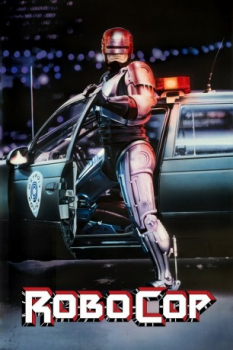

Country:United States, 102 minutes
Spoken languages:
Genres:Action, Thriller, Sci-Fi
Director(s):Paul Verhoeven
Writer(s):Edward Neumeier, Michael Miner
Video Codec:Unknown
Number: 1172


Certification:R
Storyline:
In a violent, near-apocalyptic Detroit, evil corporation Omni Consumer Products wins a contract from the city government to privatize the police force. To test their crime-eradicating cyborgs, the company leads street cop Alex Murphy into an armed confrontation with crime lord Boddicker so they can use his body to support their untested RoboCop prototype. But when RoboCop learns of the company's nefarious plans, he turns on his masters.
Cast:
Medium: Bluray,
Loaned: No
Aspect ratio: Unknown